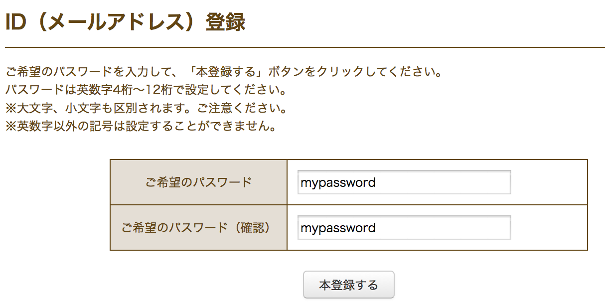
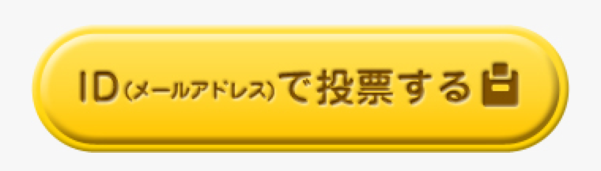
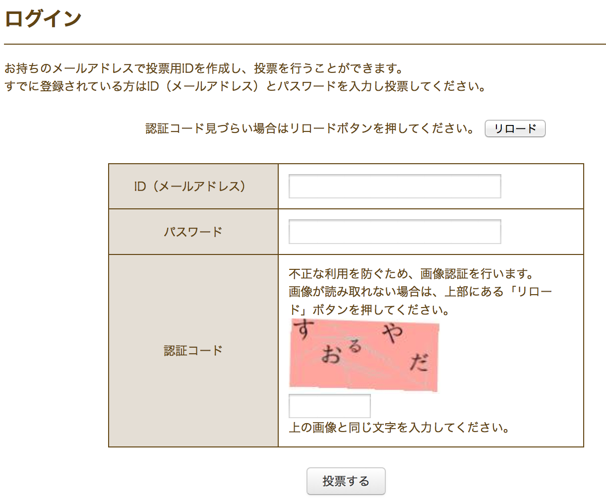
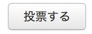
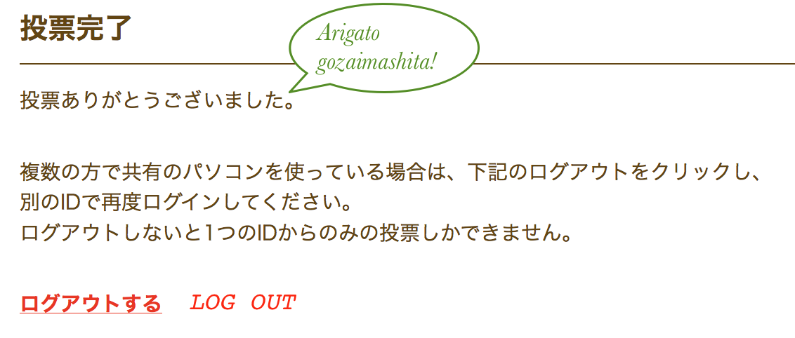

How to Vote for Taiwander!
There are six steps to get started but after you vote once it's much easier! If you read Japanese, then the original instructions are here.
Don't understand Japanese? No problem, it's still easy, let's go!
Step 1:
First you need an email address that is not from gmail or Yahoo. Send a blank email (no text, no subject) to this address: entry@vote.yurugp.jpStep 2:
A reply will come back very quickly. Got it? Click on the link. You need to choose a password. There are two boxes, type your password in each box and click the button underneath to create your account.
Step 3:
OK, we've done the registration. Time to vote for Taiwander! Go to Taiwander's page. The numbers at the top tell you Taiwander's entry number (116), overall rank, rank among non-commercial characters and number of points.To vote, click on the big yellow button!

Step 4:
To vote we need to log in (ログイン)! Put your email address in the first box and your password in the second box. That's easy! Now is the real challenge! You need to type in the letters in the picture, but they are in Japanese hiragana writing!
If you know some Japanese already or shop on Japanese websites this will be OK. But if not don't panic! Fill in the five characters and click the  button.
Arigato!
You've voted for Taiwander! Thanks! After voting you can choose to log out (maybe someone with a different email wants to vote with your computer...?). But you don't have to. If you don't log out, you will be able to vote again tomorrow without having to fill in the Japanese captcha again. Remember, it's a race! Taiwander needs to keep going up or it will go down! One vote each day up to 2015年11月16日 (18時), please!